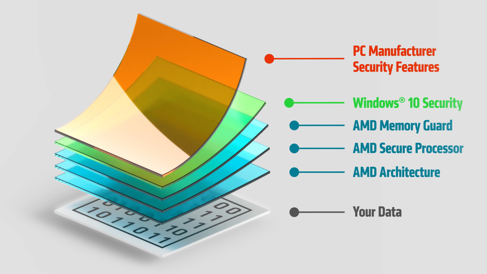
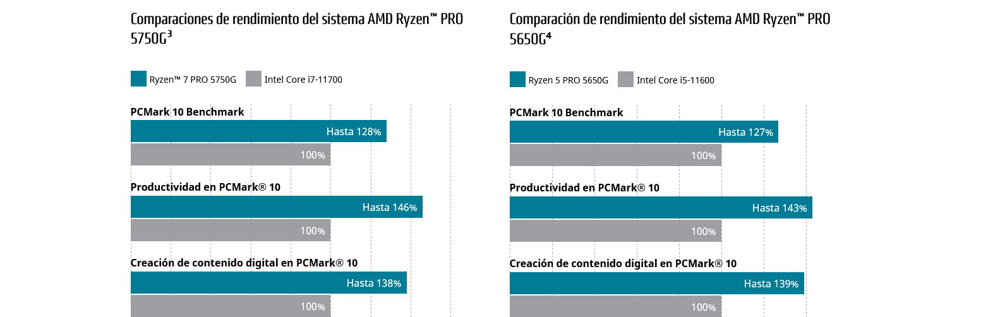
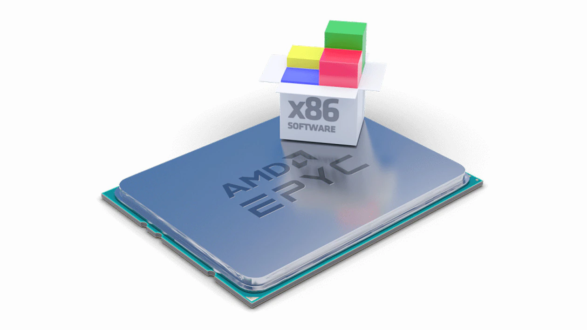
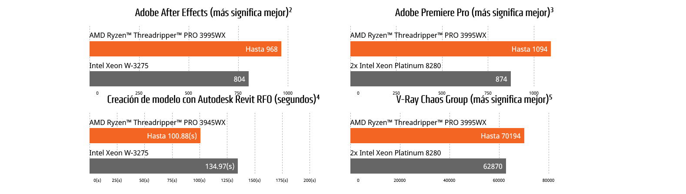

✸ AMD Athlon™ PRO: los procesadores para computadoras de escritorio AMD Athlon™ con tecnologías PRO ofrecen funciones de seguridad profesionales, rendimiento y capacidad de administración a un precio excepcional. Si tu empresa necesita PC de escritorio que sean capaces de realizar tareas administrativas básicas, proteger datos confidenciales y actualizar sistemas de forma remota, todo a un precio increíble, los procesadores Athlon PRO te están esperando.
A través de un enfoque de seguridad moderno y de varios niveles, los procesadores AMD pueden proteger los datos de las empresas, evitar períodos de inactividad y reducir el consumo excesivo de recursos:
✸ La arquitectura de procesadores “Zen” está diseñada de cero pensando en la seguridad para combatir los ataques más complejos de hoy.
✸ Un procesador de seguridad integrado protege la privacidad e integridad de los datos.
✸ AMD trabaja codo a codo con Microsoft® y los fabricantes de PC para poner en marcha y complementar sus funciones de seguridad para empresas.
✸ AMD Memory Guard, exclusivo en los procesadores AMD con tecnologías PRO, cifra la memoria del sistema en tiempo real para protegerla contra ataques físicos en caso de que te roben o extravíes tu computadora portátil.

✸ AMD Ryzen™ PRO: los procesadores para computadoras de escritorio AMD Ryzen™ con tecnologías PRO ofrecen un rendimiento de última generación, funciones de seguridad y una administración sin problemas para los entornos comerciales más exigentes. Si tu empresa necesita una producción con un consumo energético bajo, administración remota de sistemas tanto en banda como fuera de banda, o protección de datos confidenciales, los procesadores Ryzen™ PRO son tu mejor elección.
Con hasta ocho núcleos, los procesadores para computadoras de escritorio AMD Ryzen™ PRO serie 5000 facilitan el procesamiento intensivo de datos o la creación de contenido en el mundo empresarial. La revolucionaria tecnología de 7 nm, que logra que el sistema ahorre energía y funcione de forma refrigerada y silenciosa, permite que PC de escritorio de todos los tamaños (mini, de formato pequeño o torre) ofrezcan un alto rendimiento. En el siguiente gráfico podrás comprobar el rendimiento de estas APUs contra la misma generación de Intel®:

✸ AMD EPYC™: mejora tu productividad empresarial con AMD EPYC™, la familia de procesadores para servidores x86 más potente del mundo. Con un ecosistema amplio que no para de crecer, los procesadores AMD EPYC™ le ofrecen a tu empresa el mejor rendimiento por núcleo para que los resultados aparezcan rápidamente.
Procesadores AMD EPYC™:
✸ Potencian los servicios en la nube más efectivos para que tu empresa tenga seguridad y pueda ampliarse.
✸ Le aportan a tu empresa un valor excepcional para que aproveches todas las ventajas de tu inversión en TI.
✸ Proporcionan funciones de seguridad modernas a través de AMD Infinity Guard para mantener tus datos protegidos.
AMD ayudó a crear la arquitectura x86 que conocemos hoy, y todos los procesadores EPYC™ están diseñados a partir de esos estándares. Además, AMD no solo colabora con los principales proveedores de software e infraestructura, sino también con la comunidad de desarrollo abierto para garantizar que tus aplicaciones y soluciones estén optimizadas para funcionar excepcionalmente bien con EPYC™. En pocas palabras, estos procesadores ejecutan prácticamente todas las aplicaciones x86, te permiten migrar sin problemas y se integran perfectamente en las infraestructuras x86 existentes.

✸ AMD Ryzen™ Threadripper™ PRO: las workstations equipadas con procesadores AMD Ryzen™ Threadripper™ PRO son la herramienta ideal para artistas, arquitectos e ingenieros, y ofrecen una amplia gama de funciones diseñadas para procesar las cargas de trabajo profesionales más exigentes.
✸ Rendimiento de un proceso y multiproceso líder.
✸ Tecnologías AMD PRO.
✸ Ancho de banda de memoria incomparable.
✸ Conectividad PCIe® 4.0 para GPU y dispositivos de almacenamiento de nueva generación.
Los creadores de contenido profesionales ahora pueden exprimir al máximo el procesador para workstations más rápido y versátil que se haya creado, con una cantidad de núcleos inigualable para cargas de trabajo multiproceso que está a la altura de las soluciones de doble ranura de la competencia y un rendimiento de un solo proceso de alta frecuencia para tareas de pocos procesos. Su capacidad de procesamiento única y excepcional acorta los tiempos de renderizado, aumenta las iteraciones creativas, agiliza la creación de simulaciones y el reensamblaje de unidades completas, y facilita la interacción con modelos 3D.
